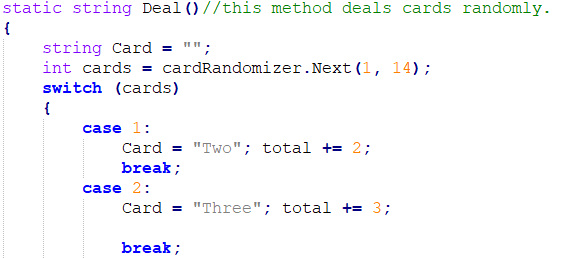

Console Blackjack in C#¶
Introduction¶
Blackjack is a very popular card game where the player attempts to get a combination of cards where their collective number values are less than or equal to 21. If the player has a value over 21, they automatically lose, or otherwise known as “busted”.
Description¶
As a fan of the game Blackjack, I wanted to make a virtual version for myself to play whenever I had the desire to. So I decided to make a version of Blackjack that operates within the terminal console of any computer. Console Blackjack was created in C#, a popular programming language that developers use when coding games. Console Blackjack was coded within the Microsoft Visual Studio environment. At the start of the game, the player is given two cards with numerical values, which are generated randomly within each game. If the player decides to “hit”, they are given another randomly-generated card value which is added to their total. The total of the dealer is also randomly generated, meaning that the outcome of the game is never certain until it is finished.
Here is a small section of code that shows the random nature of the cards:
Installation¶
Instructions:¶
- In order to play Console Blackjack, you need a terminal on your computer.
- To obtain a copy of Console Blackjack, click here.
- Click on the green button that says “Code” with a down arrow on it.
- Click on the button that says “Download ZIP”.
- Open the “BlackjackDoc-master.zip” folder that was downloaded.
- Click the button that says “Extract all” to unzip the folder.
- Click “Extract” at the bottom of the window.
- Click on the “BlackjackDoc-master” folder.
- Click on “ProjectBlackjack.exe” to play Console Blackjack.
Bugs and Issues¶
- Some grammatical issues lie within the message prompts, such as where “dealed” should be “dealt”.
- Although the “Ace” card can have the value of 1 or 11, it currently only has the value of 11.
FAQ¶
1. Can I use this code and modify it?¶
- Console Blackjack and all of its contents may be modified and used by the user.
2. When was the last significant update?¶
- Console Blackjack was last updated on May 9th, 2016.
3. How many games of Console Blackjack can I play?¶
- Console Blackjack can be played again as long as the user types “y” when prompted to start another game.
Support¶
If you encounter any bugs or issues not listed above, or would like to give feedback about Console Blackjack please feel free to email me at the following address: aaron42499@gmail.com
License¶
Console Blackjack and all of its contents is protected under Boost Software License v1.0.